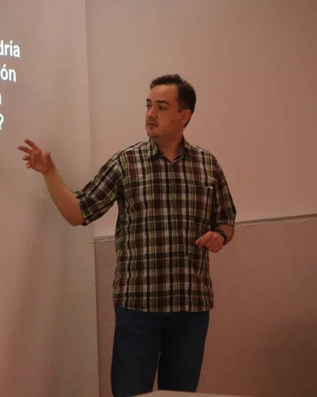
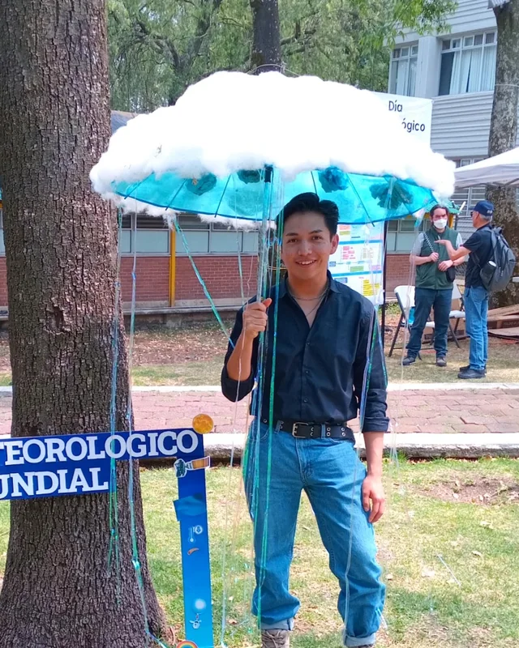

Tropical Atmospheric Dynamics
Atmospheric circulation, organized convection, and tropical waves.
TROPICAL ATMOSPHERIC SCIENCE
Research Group on Tropical Climatology, Hydrology, and Meteorology
Explore Our ResearchWHO WE ARE
Understanding the physical processes shaping tropical weather, climate, and hydrology.
TRÓPICO is a research group dedicated to advancing our understanding of tropical atmospheric, climatic, and hydrological processes.
Our research explores the physical mechanisms governing tropical weather and climate, their variability across spatial and temporal scales, and their implications for extreme weather and hydrometeorological hazards.
We promote scientific research, academic collaboration, education, and the communication of tropical atmospheric and climate science.
WHAT WE STUDY
Our research connects atmospheric dynamics, climate variability, hydrology, and tropical weather processes.
Atmospheric circulation, organized convection, and tropical waves.
Climate variability, climate change, and tropical climate dynamics.
Precipitation, atmospheric moisture transport, and hydrological variability.
Tropical cyclones, mesoscale convective systems, and extreme weather.
Extreme precipitation, droughts, heat waves, lightning, and weather-related risks.
OUR COMMUNITY
Meet the researchers, students, and collaborators who make up TRÓPICO.
Group Coordinator
Instituto de Ciencias de la Atmósfera y Cambio Climático, Universidad Nacional Autónoma de México
Email
Group Coordinator
Instituto de Ciencias de la Atmósfera y Cambio Climático, Universidad Nacional Autónoma de México
EmailPhD Student
Posgrado en Ciencias de la Tierra, Universidad Nacional Autónoma de México
EmailPhD Student
Posgrado en Ciencias de la Tierra, Universidad Nacional Autónoma de México

MSc Student
Posgrado en Ciencias de la Tierra, Universidad Nacional Autónoma de México
Research Collaborator
MSc in Earth Sciences
Posgrado en Ciencias de la Tierra,
Universidad Nacional Autónoma de México
Research Collaborator
MSc in Engineering (Hydraulic Resources)
Escuela de Geociencias,
Facultad de Minas,
Universidad Nacional de Colombia,
Sede Medellín
SCIENTIFIC OUTPUT
Scientific publications and research contributions from TRÓPICO members will be featured here.
LATEST ACTIVITIES
Explore our research updates, academic activities, and scientific outreach initiatives.
CONNECT WITH US
Ciudad de México, México